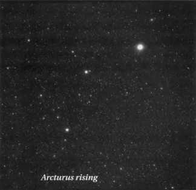
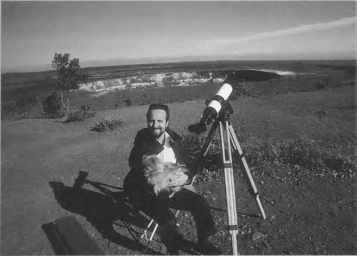
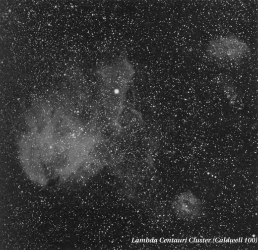
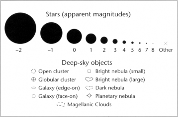

parent/ About This Book 1 The Caldwell Objects 19 Twenty Spectacular Non-Caldwell Objects 430 Appendix
xv
About This Book

O N O N E S P R I N G E V E N I N G I N T H E
1980s I was working late at Sky & Telescope, which is produced in three old yellow houses in Cambridge, Massachusetts. My office was on the second floor of one of those buildings, and my desk faced a window that looked out to the south. Everyone else had gone home, the Sun had set, and the stars were just beginning to shine. I love the subtle tones of twilight and soon found myself gazing out the window, transfixed. That's when the phone rang. Usually I wouldn't take a call after hours, but this time I did. On the other end of the line the faint, slightly strained voice of an elderly man asked, "Could you tell me the name of the yellow star shining out-
side my window?" At first I thought the call
might be a prank, but the tone of the man's voice told me otherwise; it had an almost dire quality to it, like that of a sick child asking for comfort. "I remember seeing the star when I was a child," he explained, "but I never bothered to learn its name." He paused a moment to catch his breath. "You see, I'm dying."
An electric shock raced up my spine. For a moment I didn't know how to react. I wanted to say something sympathetic; instead, I asked him where he was looking. The star was low in the east, he replied. Without looking, I knew his star. Still, I had to be certain. He deserved that much. I asked the man to hold on, then ran downstairs and dashed outside. The air was cool and still, and it smelled sweet. Looking to the east I saw a stand of trees bursting with fresh spring leaves. How ironic, I thought, as I spied his star above them. And for the first time I really saw that star and realized its significance. I returned to the phone and, with a voice that was both excited and
solemn, said, "It's Arcturus." I paused, then added, "or Hoku-lea, the Hawaiian star of glad- ness, the star that leads great voyagers home." I heard a sniff on the other end of the line, fol- lowed by a whispered "Thank you." The phone clicked. I never learned the man's name.
I'll never forget that call. It made me realize how important the stars are to humanity, how comforting they can be in times of distress. But why, I wondered, had this man never bothered to learn that star's name or to pursue his interest in the night sky? There's so much in the heavens to delight our eyes and warm our hearts. By nature we are an inquisitive species. When we smell a rose, the fragrance makes us giddy, and immediately we ask, "What kind of rose is that?" And we learn its name — say, a Lady X. The same happens when we see a flash of red feathers in our yard. "What bird is that?" we wonder. "That's a cardinal," we're told. Pick up a pure green gem, and our mind queries, "Emerald?" And we seek the answer. But how many millions of people look to the sky at night
About This Book 1
and simply say "Wow," leaving it at that? To many the sky is overwhelming, mind-boggling, too metaphysically deep.
That's why if you're interested in learning the night sky, chances are you'll be alone in your pursuit. You'll be one of many "backyard" astronomers, isolated lovers united under one sky. But we are not really alone. We have friends, we have companions, and they are the ever-loyal stars — and even more, entire clusters and galaxies of them. (What's a cluster anyway, but a family of stars traveling through space?) We have above us a cityscape of starlight. We have within our grasp all the natural wonders in the heavens. And each has a story to tell. To "hear" those stories all we have to do is look, "listen," and read. That's why I've created the Deep-Sky Companions series — to help introduce you to some new companions beyond the friendly veneer of stars. It's also why I use a conversa- tional tone in the text. I want you to feel my presence as I describe what it is you're seeing. I want to make your nights less lonely, more complete. The late Leslie C. Peltier opens the sixth chapter of his endearing book Starlight Nights with a drawing of a child out under the stars. That child — Peltier himself — holds open before him a book, Martha Evans Martin's classic, The Friendly Stars, and you can sense his enamored skyward gaze. When I look at that drawing I can almost hear the book speaking to him, helping him become, as Robert Frost said, "acquainted with the night." Similarly, I try to describe and guide you to each Caldwell object in a friendly and fun manner.
If you're a beginner and have not used Deep-
Sky Companions: The Messier Objects, I encourage you to do so, because it is. . . well, a companion to this work, the first in what promises to become a family of titles. More important, its second chapter is designed to
2
help newcomers get started in astronomy. That section is not repeated in this work. But do not despair. This book can stand on its own. Its charts and text will enable you to locate each Caldwell object with ease. But they do not eliminate the need for newcomers to learn how to navigate the sky or to become familiar with astronomical terms. If you live in the Southern Hemisphere, please note that the book is written with a definite Northern Hemisphere bias. For instance, when I refer to the object's location above the horizon, it's generally as seen through the eyes of someone living north of the equator. But the star charts, photographs, sketches, and descriptive essays can be used by anyone, anywhere.
F I E L D W O R K
I live on the Big Island of Hawaii, the same island that supports the fleet of monster telescopes atop the nearly 14,000-foot-high summit of Mauna Kea. My house, however, is in a little town called Volcano at an altitude of 3,600 feet on the burning back of Kilauea volcano. I generally observe from Kilauea's 4,200-foot-summit in the Hawaii Volcanoes National Park. There I get unobstructed views of declinations (celestial "latitudes") as far south as -70°. That means only four Caldwell objects are below my horizon, though that number increases to seven if I want to get a decent view a few degrees above the horizon.
In the photograph on the next page you can
see one problem I sometimes have when observing near the horizon of my unique observing site. The dark band skirting the distant horizon is vog, or volcanic smog, from a cone erupting on Kilauea's southeastern flank. When this photograph was taken the vog was concentrated to the east, toward the erupting vent; on other days the vog can drift farther to the south. It's not always a menace, but some-
Deep-Sky Companions: The Caldwell Objects

times vog can back up and cause a smelly whiteout in Volcano. On average, Kilauea releases anywhere from 350 to 1,850 tons of sulfur dioxide per day; about 90 to 260 tons of that is released at the summit, where I observe. When sulfur dioxide is released at the summit it reacts chemically with moist air to form sulfuric acid or, with water vapor, acid rain. With a pH as low as 2.0, this acidic precipitation
keeps the landscape around the crater nearly devoid of vegetation, which is why my horizons are free of obstructions.
I'm not trying to give you a geochemistry lesson. I just thought you might like to know that after I completed the observations for Deep-Sky Companions: The Messier Objects, I discovered a problem. Four years of exposure to the acidic Kilauea environment had all but obliterated the coatings on the objective lens of my 4-inch Tele Vue Genesis refractor. The glass elements also had some strange semi-transparent blemishes, like alien bacteria magnified a million times over, and hairy growths had taken hold around the objective's elements, on the telescope's diagonal mirror, and . . . well, all over. Some of those abstract
creations might have been mold nurtured by the tropical downpours of La Nina. I suppose I could have sacrificed the scope to the volcano and then gone out to buy a new one. But I'm a sentimental observer. Not only do I love my Genesis, I love my old, beat-up, sulfur-eaten Genesis. I wanted to observe all the Caldwell objects with it. So I called Tele Vue Optics founder Al Nagler, a true friend to the amateur
community, and asked if his company could clean up an old friend. "Of course," Al said. So the telescope went on a 6,000- mile journey to New York. A week later, Al called. "Stephen!" he cried (not really), "what did you do to this telescope?" After I told him, I think I heard him faint and hit the floor.
Anyway, I got my Genesis back with a card from the optician, who said Al was still recuperating. I unpacked the telescope and
looked at the lens — perfect. I had back my old 4- inch f/5 (500-mm) Genesis refractor. (Actually, Al recently looked up this telescope's original "specs" and told me that it has a focal length of
504.8 millimeters.) And with this new lease on life, my Genesis turned its tiny 4-inch eye out over the volcanic landscape and began hunting down, one by one, the 102 Caldwell objects I planned on observing from Hawaii. To my surprise I was also able to use my restored Genesis to make an additional, dramatic sighting: I spotted NGC 4833 (Caldwell 105) just 13' above the southern horizon, making it the most southerly Caldwell object visible from the United States.
For this five-year-long study I used three eyepieces (also made by Tele Vue): a 22-mm
About This Book 3
Panoptic, a 7-mm Nagler, and a 4.8-mm Nagler. On the Genesis these eyepieces provide magnifications of 23x, 72x, and 105x, respectively. A 1.8x Barlow lens gave me additional magnifications of 41x, 130x, and 189x, while a 3x
Barlow gave me high powers of 216x and 315x.
On the Genesis 216x is equal to a textbook 54x per
inch of aperture, while 315x gives nearly 80x per inch of aperture — perfect for those nights when the atmosphere is extremely steady, or for high- power observations of planetary nebulae. Occasionally I would pop in some of my old Fecker eyepieces, which I used for planetary observing a quarter century ago with the 9-inch and 15-inch refractors at Harvard College Observatory. These eyepieces aren't manufactured anymore, though they are superb two-element eyepieces (albeit with little eye relief). Observing with them is sort of like looking through the eye of a sewing needle, but the star images are tack-sharp. It is with these eyepieces that I made pre-Voyager 1 observations of the spokes in Saturn's rings and determined the rotation period of Uranus's cloud tops (pre- Voyager 2) among other things. Unfortunately, because of their minimal eye relief, only a handful of today's observers would feel comfortable using these eyepieces. On this project I employed these veterans only when I needed to search for, say, a planetary nebula's central star, or to try to resolve a troubling knot in a galaxy's arm. As a "finderscope" I now use a Tele Vue Qwik Point (it's like a laser pointer). The Genesis offers me a field of view nearly 3° wide when I use the 22-mm Panoptic, and I can't remember a time when I had trouble locating an object with that eyepiece and the Qwik Point.
The weather, as anywhere, can be weird in
Volcano. Clouds can suddenly appear out of nowhere and force me to move my telescope.
4
But that's another reason why I like the Genesis and its sturdy Gibraltar mount; in two minutes I can pack it up and move on. (I hope Al never sees the mount, though, because one leg is being held together by duct tape, and it has all manner of love taps and bruises.)
In the five years it took to make the obser- vations in this book, I watched my night sky brighten, not from light pollution but from air- glow. When I made the observations for Deep-Sky Companions: The Messier Objects in the mid-1990s, the sky over Hawaii was the darkest it had been in 10 years, with sunspot minimum occurring in 1995. But when I began observing the Caldwell objects in 1996, solar activity had begun to rise, and sunspot data indicate that solar maximum occurred in May 2000, just as I was wrapping up. The increase in natural sky brightness over the years was subtle yet remarkable. For instance, in June 2000, shortly after astronomical twilight, the base of the zodiacal light stretched across the northern horizon, where I saw an extremely pale green glow at a height of about 10°. This latter luminescence was not artificial light pollution but airglow, a sort of permanent aurora that inten- sifies during heightened solar activity. Overhead, the effect dims starlight, perhaps by a magnitude. It's an incredible phenomenon.
By emphasizing natural, not manmade, light
pollution, I do not want to give you the impression that everything is rosy in Volcano. In the seven years that I've lived here I have seen unnatural changes in the night sky as well. I had been traveling to the island of Hawaii for 15 years before I moved here in 1994. Now, for the first time in about 20 years, I can see skyglow emanating from Hilo, 25 miles to the northeast, and from some closer subdivisions. It's not much compared to what others have to contend with at dark sites on the U.S. mainland, and the artificial glow only appears
Deep-Sky Companions: The Caldwell Objects
when there is moisture in the air. But it's there. I've also seen our village grow and more street- lights go up. An armed-forces recreational facility in the national park was recently renovated, and this has added light to the summit environment. The saddest experience I've had, though, occurred one night as I traveled to the summit of Mauna Kea and noticed a strange dim reflection on the west side of the Keck Observatory domes. Light from Kona, 14,000 feet below the observatory, was defiling these temples to the stars. The eastern horizon had an unhealthy pallor caused by Hilo's sodium-vapor lamps, whose brightness seemed to have intensified. And lights from the neighboring island of Maui, which I had never noticed before, burned through low clouds to the northwest. "But there are lighting ordinances and low-pressure sodium-vapor lamps on the island, aren't there?" you ask. Well, yes. That's true. But take a drive around the island. Most of the lights are unshielded, and extended-tube lighting is becoming more widespread. Many of the new lamps are overpoweringly strong, so much so that the roads are difficult to see in a rainstorm. And so it's happening: one of the last untouched astronomical frontiers is being peeled away in strips. I suppose that as long as the major observatories have their filters, they're all set, unlucky as we may be down below. But I have not sat idle. I have met with senators, local entrepreneurs, and park officials. I've given lectures on light pollution and voiced my concerns at meetings. Some village businesses such as the Kilauea Lodge and the Steam Vent Cafe took immediate action to shield or remove troublesome lights. So light pollution can be mitigated. It just takes a little time and faith in the human condition.
My first Hawaii observation for Deep-Sky
Companions: The Caldwell Objects took place in August 1996, and my last in August 2001.
Between those dates I made two trips to New Zealand (one successful, one dampened by clouds), and one to South Africa, to observe the southernmost Caldwell objects. In August 1997 I was a guest at the Auckland Observatory (in Auckland), at Carter Observatory (in Wellington), and of amateurs Rob and Lesley Hall in Wellington. Auckland Observatory has a fantastic 20-inch f/13.5 Zeiss reflector with a 41/2- inch refractor as a finderscope. Despite the temptation to use only the 20-inch, I primarily observed the globular star clusters Caldwell
105 (the one I saw 13' above my Hawaii hori- zon), Caldwell 107, and Caldwell 108 with the 41/2-inch finder, whose aperture was compara- ble to that of the Genesis — though I did spy the objects through the main scope as well. In fact, my drawings of these objects are compos- ites based on these views. While the main structures and shapes represent what was seen through the 41/2-inch at 19x, 75x, and 150x, I added stars seen through the 20-inch. I did this because I was observing under the light of a bright gibbous Moon; my moonlit views through the 41/2-inch alone were not represen- tative of what patient observers could hope to see under darker skies with a small telescope. And though I also observed Caldwell 109 (a planetary nebula) with the 41/2-inch, my draw- ing of it is based solely on my view through the 20-inch. This planetary is easily visible in any small telescope, but small apertures reveal only its swollen disk.
My observations of Caldwell 103,104, and
106 (and Caldwell 107, again) were made with a Celestron 8-inch Schmidt-Cassegrain in the Halls' Wellington backyard. As I explained in Deep-Sky Companions: The Messier Objects, the 4-inch Genesis under a dark sky shows as much detail in an object as an 8-inch Schmidt-Cassegrain does from a suburban sky. Therefore I did not stray from my mission.
About This Book 5
Why didn't I bring the Genesis to New Zealand? That's simple. I would have had to check it as luggage, and the airline was unwilling to reim- burse me if the telescope were lost en route. Why New Zealand? It's beautiful and I have friends there — and that's half the observing experience.
I have been traveling to the Southern Hemisphere since 1982, and over the years I have accumulated impressions of some of the more prominent Caldwell objects through a variety of instruments. I observed some of them through Carter Observatory's impressive 9-inch refractor in 1982. Four years later I observed some from the Australian outback. I've spied a few during visits to Central America; and I've seen others from the alti-plano in Bolivia and game reserves in South Africa. But for this book, I've focused on how 96 percent of these objects look through the same 4-inch telescope from my home in Hawaii.
HOW TO USE THIS BOOK To locate a Caldwell object, first look up its celestial coordinates (right ascension and declination) in its section of Chapter 2, or in the table in Appendix A. Next, flip to the all-sky maps located on the endpapers and use the coordinate grid to find the object in the sky. Take note of the brightest stars (those with Greek letters or Flamsteed numbers) that lie within a few degrees of your Caldwell pick. Next, locate those stars on the detailed finder chart that accompanies the object's photograph and text in Chapter 2. (The detailed finder charts in Chapter 2 are oriented with north up and west to the right.) Finally, find the part of the text that describes how to locate the object and simply follow the directions.
Each object's entry in Chapter 2 opens with a
photograph (oriented with north up and west to the right, unless otherwise noted) and a list of essential data: Caldwell number;
6
common name(s), if any; NGC, 1С, or other catalog number, if any; object type; constellation; equinox 2000.0 coordinates; apparent magnitude; angular size or dimensions; surface brightness in magnitudes per square arcminute (for galaxies); distance; and the object's discoverer and discovery date. The text includes a history of the object's discovery; recent research findings; naked-eye or binocular impressions; the object's appearance through the 4-inch Genesis refractor at various magnifications; descriptions by other observers using larger instruments; a visual challenge or two; and brief notes on any interesting objects in the same patch of sky.
A drawing also accompanies the text, so you
can compare your view of any Caldwell object with my own. The views may be very dissimilar, but that's okay; seeing things differently is a human condition.
You'll find William Herschel's original pub- lished description of the object or, if William did not observe the object, his son John's. Deep-sky aficionado Barbara Wilson (like Larry Mitchell, a member of the Houston Astronomical Society, and a modern incarnation of William Herschel) supplied me with William's original notes, which she drew from his original catalogs as they appeared in the Philosophical Transactions of the Royal Society of England.
John Herschel's quotations have been gleaned from a variety of secondary sources. For objects in the northern skies I relied on Burnham's Celestial Handbook and Walter Scott Houston's "Deep-Sky Wonders." For the southern objects I used Herschel quotes as given by the "Deepsky Observer's Companion"
(www.fortunecity.com/roswell/borley/49/), which was created by the Astronomical Society of South Africa to promote its Deepsky Observing Section. The quotes are from John
Deep-Sky Companions: The Caldwell Objects
Herschel's original observations, published in 1847 as "Results of Astronomical Observations made during the years 1834, 5, 6, 7, [and] 8, at the Cape of Good Hope; Being the completion of a telescopic survey of the whole surface of the visible heavens, commenced in 1825." John Herschel resided in South Africa from 1834 to 1838, during which time he cataloged more than 1,700 clusters and nebulae. During his stay John Herschel often made several observations of each object. The quotes used in this book's tables, however, refer only to his first observation; a date is given only if the junior Herschel discovered the object.
Incidentally, when Barbara and I began to
compare William's notes with the descriptions in the 1864 General Catalogue of Nebulae (or "GC," as it is commonly called), we noted that the GC's descriptions of a given object do not always match William Herschel's. For example, compare William Herschel's description of NGC 7023 (Caldwell 4), a reflection nebula in Cepheus, with that in the GC:
W. HERSCHEL: [Observed 18 October 1794] A star of 7th magnitude. Very much affected with nebulosity, which more than fills the field. It seems to extend to at least a degree all around; fainter stars, such as 9 or 10 magnitude, of which there are many, are perfectly free from this appearance. (HIV-74)
GC: Extremely faint, star of 7th magnitude in nebula (?).
John Herschel compiled the data for the GC, and he based the object descriptions largely on his observations and his father's. Thus I have included GC descriptions for Caldwell objects, when available. The GC descriptions that don't match William's original notes probably reflect observations made by John Herschel and not by his father.
An NGC description (whenever available) follows each Caldwell object's GC description. In 1888 Johann Louis Emil Dreyer published a
modified version of the General Catalogue; he merged the GC and all prior catalogs, as well as any new discoveries available to him, into a new catalog: the New General Catalogue, or NGC The NGC repeated most of the original GC object descriptions unaltered. But every now and again we find slight, and sometimes major, variations. Compare the following NGC description of NGC 7023 with Herschel's original description and that from the GC, given above:
NGC: A star of 7th magnitude in an extremely faint, extremely large, nebulosity.
The Caldwell Catalog also includes descriptions from the Index Catalogues, supplements to the NGC. Caldwell 5, for instance, is the 342nd object in the Index Catalogues, and thus goes by the name 1С 342. And Caldwell 9's moniker, Sh2-155, identifies that nebula as the 155th object in Stewart Sharpless's Catalogue of HII Regions, which appeared in the December 1959 Astrophysical Journal Supplement.
At the end of each Herschel description is a code contained in parentheses ("H IV-74," for instance, or "h 34"). This code dates to a classification system created and used by the Herschels. "H" stands for the elder Herschel and "h" for his son.
Nothing is ever simple when dealing with historical observations, so I'll make this point brief. William Herschel had his own numbering system for his objects. So did John. When John Herschel combined his observations with his father's to create the General Catalogue, he created an entirely new numbering system. Of course, when Dreyer modified the GC to create the NGC, he did away with the GC numbering system and assigned to the objects the NGC numbers we use today. Here's an example of the possible confusion: Caldwell 2, a planetary nebula in Cepheus, is also HIV-58, h 8, GC 20, and NGC 40.
About This Book 7
Now to explain the Roman numerals and numbers in William Herschel's system. The Roman numeral identifies the class into which Herschel placed each object:
Bright nebulae
Faint nebulae
Very faint nebulae
Planetary nebulae: Stars with burs, with milky chevelure, with short rays, remarkable shapes, etc.
Very large nebulae
Very compressed and rich clusters of stars.
Pretty much compressed clusters of large or small stars.
Coarsely scattered clusters of stars.
The Arabic numeral that follows is simply the order in which that object appears in that class. So H IV-58 is the 58th object in Herschel's Class IV (planetary nebulae).
Herschel and GC designations no longer see much use. But I give them here for two reasons. William Herschel's designations tell us something about the 18th-century perception of these objects' very natures. Remember that Herschel did not know about galaxies as we think of them today, and he believed that planetary nebulae were solar systems in for- mation. In fact, Herschel believed that all nebulae could be resolved into stars provided the observer used a telescope of sufficient aperture and magnification. Indeed, some of his "clusters" are actually galaxies peppered with foreground stars, while many of his "nebulae" are in fact galaxies — island universes like our Milky Way, endowed with billions or trillions of stars.
These classical descriptions have also helped
me, and other astronomers, solve some historical mysteries attending several of the Caldwell objects. The histories of many of these objects have never been published in any detail in the popular literature, and this book required extensive research. In doing the
8
research, I have found some perplexing puzzles. Two of the most dramatic examples of this kind of historical detective work are provided by the open cluster NGC 6885 (Caldwell 37) in Vulpecula and the nebula-and-cluster complex that was listed as IС 2944 (Caldwell 100) in the original Caldwell Catalog. The findings are too complex to discuss here, but I encourage you to read the fascinating accounts given in Chapter 2.
As these accounts make clear, I did not solve the puzzles alone. Barbara Wilson and Brent Archinal (U.S. Naval Observatory) were my main archive companions, and in some cases we had to call upon the assistance of other sleuths, all of whom are credited in the essays in the next chapter. The historical mysteries were rather vast. Roughly half of the objects in the Caldwell Catalog were subjects of some historical intrigue. For instance, are you aware that many observers (including professional astronomers) do not know which star in the Kappa Crucis Cluster (Caldwell 94) is Kappa Crucis? Do you know the proper designation of the Cocoon Nebula (Caldwell 19)? (According to Archinal, the "Caldwell Catalog has it right and everyone else has it wrong.") And did you know that Eta Carinae (in Caldwell 92) may have pulsed in and out of view since the dawn of humanity? These are but a few of the many findings that follow in the individual Caldwell accounts.
MAGNITUDES THEN AND NOW
One important, albeit technical, point of historical contention involves the apparent magnitudes of stars and deep-sky objects. In Deep-Sky Companions: The Messier Objects I thoroughly discuss limiting magnitudes and the origins of the magnitude formula we use today. But what about the magnitudes we see in the historical records? How do they compare to those that
Deep-Sky Companions: The Caldwell Objects
we use today and to one another? I was always fascinated by the following entry in the log of the 19th-century Harvard astronomers William Cranch Bond and his son, George. On October 11,1847, these men used the Harvard College Observatory's 15-inch refractor to probe the depths of the Trapezium star cluster in the Orion Nebula. While doing so they found that "a star of the fifteenth magnitude is seen with this Telescope within, or less than, twenty minutes of sunrise, and this without any particular effort, a good evidence of its tenacious grasp of light" (emphasis mine). How could this be, I long wondered — seeing a star more than a full magnitude fainter than Pluto in bright twilight?
Now consider the brightness of the central
star in NGC 40 (Caldwell 2), a planetary nebula in Cepheus. William Herschel estimated the star to be of magnitude 9, the GC records it as magnitude 10, and the NGC (as well as many modern references) lists it as 12th magnitude. Has the star faded over the years? It's certainly possible. Many central stars of planetary nebulae vary in brightness. Does this string of historical data prove that this particular star did so? Not necessarily.
In the Monthly Notices of the Royal Astro- nomical Society (Vol. XVII, 1857), Rev. Norman
R. Pogson, the father of our modern magnitude formula, points out that, though many "great catalogue-makers" adopted his brightness ratio of
2.512 between stars that were one magnitude apart (so a difference of five magnitudes would correspond exactly to a brightness ratio of 100 to 1), some great observers of his day adopted different ratios — among them the Struves, William Dawes, the Bonds, John Herschel, and Adm. William Henry Smyth. The implications are extraordinary.
Pogson explained that the Struves had 6 magnitudes spanning the entire range between
the limit of naked-eye vision (namely, 6th magnitude) and the visual limit of his 15-inch refractor (namely, 12th magnitude). This implied that each successive step on the apparent- magnitude scale corresponded to a brightness ratio of 4. By contrast, Pogson's ratio suggests that the visual limit for that telescope was magnitude 15.1, more than 9 magnitudes fainter than the dimmest stars visible to the naked eye. Dawes adopted Struve's ratio. The Bonds, on the other hand, chose to designate the visual limits of 1-inch and 15-inch telescopes as magnitudes of 9 and 20, respectively, while Herschel divided such stars between magnitudes of 6 and 18. And Smyth "took 16th magnitude as the limit for [an instrument with an] aperture of 5.9 inches" while Pogson's formula suggests a limiting magnitude of 13 for a telescope of that size.
Pogson's table, reproduced on the next page,
allows us to get a feeling for the visual limiting magnitudes that Struve, Bond, Herschel, and Smyth would have attributed to instruments of various apertures. It gives, in the first column, a "standard" magnitude, with each step corresponding to a decrease in stellar brightness by a factor of 2.512 (Pogson's ratio). The second column gives the "apertures required by an average sight to reduce such stars to a limit of vision" (emphasis mine) — in other words, the aperture required to make such stars visible at the eyepiece (assuming that the fully dark- adapted eye has a limiting magnitude of 6.0 and a pupil diameter of 0.23 inch, or 5.8 mm). And the remaining columns show the corresponding limiting magnitudes of Struve, Bond, Herschel, and Smyth.
The table's bottom line tells the story by
itself. Through a 14.4-inch telescope Pogson's "average" observer would see stars as faint as 15th magnitude, while Struve would deem the limit 12th magnitude; Bond, 20th magnitude;
About This Book 9
|
S T A N D A R D M A G N I T U D E S |
A P E R T U R E S I N I N C H E S |
C O R R E S P O N D I N G M A G N I T U D E S O F | |||
|
S T R U V E |
B O N D |
H E R S C H E L |
S M Y T H | ||
|
6 |
0.229 |
6.0 |
6.0 |
6.0 |
6.0 |
|
7 |
0.363 |
6.6 |
7.0 |
7.3 |
7.0 |
|
8 |
0.575 |
7.3 |
8.0 |
8.6 |
8.0 |
|
9 |
0.912 |
8.0 |
9.0 |
10.0 |
9.6 |
|
10 |
1.44 |
8.6 |
10.0 |
11.3 |
11.2 |
|
11 |
2.29 |
9.3 |
11.6 |
12.6 |
12.8 |
|
12 |
3.63 |
10.0 |
12.9 |
13.9 |
14.4 |
|
13 |
5.75 |
10.6 |
15.2 |
15.2 |
16.0 |
|
14 |
9.12 |
11.3 |
17.5 |
16.6 |
— |
|
15 |
14.4 |
11.9 |
19.8 |
17.9 |
— |
and Herschel, 18th magnitude. So it's clear we have to take into account the magnitude scale used by each observer before saying anything definitive about an object's apparent brightness
— much less any brightness changes — on the basis of their logs. A discussion of your telescope's visual limits can be found in Deep-Sky Companions: The Messier Objects.
DATA SOURCES
The data in this book were drawn from a variety of modern sources. Many of these sources were used in Deep-Sky Companions: The Messier Objects, so you can compare the properties of the respective catalogs' objects with confidence. Generally speaking, recent research findings on the physical nature of these objects were gleaned from the Astronomical Journal or the Astrophysical Journal; citations are frequently given. From each object's apparent diameter and distance I calculated its physical dimensions using the formulas that appear on page 35 of Deep-Sky Companions: The Messier Objects. Other information, such as constellation lore;
10
properties of stars; and objects' positions, appar- ent magnitudes, angular sizes, and surface brightnesses, come from the following excellent sources (primary sources are listed first):
Star Names, Constellations, and Mythology
Allen, Richard Hinckley. Star Names: Their Lore and Meaning. New York: Dover Publications, 1963.
Staal, Julius D. W. The New Patterns in the Sky: Myths and Legends of the Stars. Blacksburg, VA: McDonald and Woodward, 1988.
Motz, Lloyd and Carol Nathanson. The Constellations: An Enthusiast's Guide to the Night Sky New York: Doubleday, 1988.
Stellar Magnitudes and Spectra
Hirshfeld, Alan, Roger W. Sinnott, and Francois Ochsenbein, eds. Sky Catalogue 2000.0, Vol. 1, 2nd ed. Cambridge, England: Cambridge University Press, and Cambridge, MA: Sky Publishing Corp., 1991.
Deep-Sky Companions: The Caldwell Objects
SIMBAD (Set of identifications, Mea- surements, and Bibliography for Astro- nomical Data). Strasbourg, France: Centre de Donnees Astronomiques de Strasbourg. http://simbad.u-strasbg.fr/ and http:// simbad.harvard.edu/.
Stellar Distances
The Hipparcos and Tycho Catalogues. Noordwijk, The Netherlands: European Space Agency, 1997.
Double Stars
The Washington Double Star Catalog.
Washington, DC: Astrometry Department,
U.S. Naval Observatory, http:// ad.usno.navy.mil/ad/wds/wds.html.
Couteau, Paul. Observing Visual Double Stars.
Cambridge, MA: MIT Press, 1981.
Hirshfeld, Alan, and Roger W. Sinnott, eds. Sky Catalogue 2000.0, Vol. 2. Cambridge, MA: Sky Publishing Corp.; Cambridge, England: Cambridge University Press, 1985.
Luginbuhl, Christian В., and Brian A. Skiff. Observing Handbook and Catalogue of Deep-Sky Objects. Cambridge, England: Cambridge University Press, 1989.
Variable Stars
Sky Catalogue 2000.0, Vol. 2.
Levy, David H. Observing Variable Stars: A Guide for the Beginner. Cambridge, England: Cambridge University Press, 1998.
Payne-Gaposchkin, Cecilia. Variable Stars and Galactic Structure. London, England: Athelone Press, 1954.
Open Star Clusters
Hynes, Steven J. and Brent A. Archinal.
Star Clusters. Richmond, VA: Willmann-Bell, Inc., publication pending. (A draft was made available in advance of publication.)
Globular Star Clusters
Harris, William E. Catalog of Parameters for Milky Way Globular Clusters. Hamilton, ON: McMaster University, http:// physun.mcmaster.ca/~harris/mwgc.dat.
Skiff, Brian A. "Observational Data for Galactic Globular Clusters." Webb Society Quarterly Journal 99:7 (1995); updated May 2,
1999, at www.ngcic. com/papers/gcdata.htm. (most diameters)
Planetary Nebulae
Skiff, Brian A. "Precise Positions for the NGC/IC Planetary Nebulae." Webb Society QuarterlyJournal 105:15 (1996). (positions)
Observing Handbook and Catalogue of Deep-Sky Objects, (dimensions)
Cragin, Murray, James Lucyk, and Barry Rappaport. The Deep Sky Field Guide to Uranometria 2000.0, lsted. Richmond, VA: Willmann-Bell, Inc., 1993. (apparent mag- nitudes and dimensions of far-southern planetary nebulae)
Acker, Agnes, and Francis Gleizes. Catalogue of the Central Stars of True and Possible Planetary Nebulae. Strasbourg, France: Observatory of Strasbourg, 1982.
Hynes, Steven J. Planetary Nebulae: A Practical Guide and Handbook for Amateur Astronomers. Richmond, VA: Willmann-Bell, 1991.
Planetary-nebula distances generally were gleaned from the professional research lit- erature or from the World Wide Web page of the Space Telescope Science Institute
About This Book 11
(www.stsci.edu).
Diffuse Nebulae
The Deep Sky Field Guide to Uranometria 2000.0.
Sky Catalogue 2000.0, Vol. 2.
Galaxies
Tully, R. Brent. Nearby Galaxies Catalog. Cambridge, England: Cambridge University Press, 1988. (types, angular sizes, distances, masses, and luminosities)
The Deep Sky Field Guide to Uranometria 2000.0. (apparent magnitudes and surface brightnesses)
NASA Extragalactic Database. Pasadena, CA: Infrared Processing and Analysis Center. http://nedwww.ipac.caltech.edu/. (positions and, when not available from the above references, other parameters)
Extragalactic Supernovae
"List of Supernovae." Cambridge, MA: Cen- tral Bureau for Astronomical Telegrams. http://cfa-www.harvard.edu/iau/lists/ Supernovae.html.
Note that World Wide Web Uniform Re- source Locators, or URLs, are subject to change. The dimensions, magnitudes, and positions of non-Caldwell objects generally were taken from The Deep Sky Field Guide to Uranometria 2000.0. Incidentally, the two-volume Uranometria 2000.0 atlas was radically revised as this book went to press, as was its Deep Sky Field Guide companion; descriptions of Uranometria 2000.0 charts refer to previous incarnations.
Finally, in Chapter 2 and Appendix A the Caldwell objects' celestial coordinates are stated to varying degrees of precision. In each case the decision was based on the object's angular
size and degree of concentration or symmetry (tiny planetary nebulae merit arcsecond preci- sion, for example, while loose, 1°-wide open clusters are listed to the nearest arcminute). The coordinates should get each Caldwell object into the field of view of a computer-driven telescope or an equatorially mounted one being aimed with the help of setting circles.
Incidentally, you'll note that I do not refer to objects in this book as "C" objects, as in "C101." I spell out the name "Caldwell." For the same reason that Moore decided not to use the prefix "M" (because that would conflict with the Messier, or "M," objects), I decided not to call his picks "C" objects either. As Archinal points out, the "C" prefix has already been used for other astronomical catalogs and is widely recognized as a prefix designating star clusters. "The Dictionary of Nomenclature of Celestial Objects .
. . shows 13 catalogs already designated by the 'C name," he says. "In fact the Task Group on Astronomical Designations of IAU Commission 5 specifically recommends. . . that among other things, 'an acronym shall consist of at least three characters.'" Thus for this book I have adopted Archinal's recommendation, and use the full Caldwell name. ("C" designations do appear on the detailed finder charts and some photos for brevity, however.)
SOME ORIGINAL SINS
This work corrects several unfortunate errors that appeared in the December 1995 issue of Sky & Telescope, where the Caldwell Catalog first was published. In several cases the tabular information (magnitudes, sizes, etc.) in this book also differs significantly from that found in the original Sky & Telescope presentation or on early editions of the popular Caldwell Card. Here are but a few of the most obvious errors that have been corrected in this book.
2 Deep-Sky Companions: The Caldwell Objects

Caldwell 26. The objects in the Caldwell Catalog were meant to be listed in order of descending declination. Therefore Caldwell 26, or NGC 4244, a l0th-magnitude spiral galaxy with a declination of +37° 48', should not be between Caldwell 25 (NGC 2419, a globular cluster at declination +38° 53') and Caldwell 27 (NGC 6888, a circumstellar nebula at declination +38° 21'). It is out of place. NGC 6888 should be Caldwell 26 and NGC 4244 should be Caldwell 27. But what's done is done,
and there's no need to create further confusion. Just be aware of this fact.
Caldwell 37. The open cluster associated with this Caldwell number has a significantly different position and size than given in the original Caldwell Catalog. The differences attest to a major historical enigma, details of which are given in Chapter 2.
Caldwell 41. Like Caldwell 26, the Hyades are
About This Book 1 3
out of order with respect to declination; the cluster should be listed between NGC 7814 (Caldwell 43) and NGC 7479 (Caldwell 44).
Caldwell 49. The designation of the Rosette Nebula as NGC 2237-9 is incorrect; the Rosette comprises NGC 2237, NGC 2238, and NGC 2246.
Caldwell 89. The S Normae Cluster is not NGC 6067, as originally published in Sky & Telescope, but NGC 6087.
Caldwell 100. This entry was originally labeled "IС 2944" and "Gamma Centauri Cluster." But this identification is quite garbled. First, there is no Gamma Centauri Cluster; the name should have read "Lambda Centauri Cluster." But that alone doesn't fix the problem, for in the Index Catalogues IС 2944 is a nebula, not a star cluster. (Steven Lee and David Ratledge came close to solving the puzzle of Caldwell 100's designation in the June 2000 issue of Sky & Telescope, page 12, but even their informative discussion didn't close the case on Caldwell 100. See Chapter 2.)
That's just the tip of the research iceberg. Once I started accumulating historical and observational information on other Caldwell objects, more problems materialized; their solu- tions are detailed in the appropriate sections of the next chapter.
One more concern. Throughout the book I will refer to several star atiases: Wil Tirion's Sky Atlas2000.0 (both the first and second editions), Uranometria 2000.0, the Millennium Star Atlas, and more. Why? Just as there are inconsistencies within the historical record and the amateur lit- erature, so too are there problems with these star charts (omissions, misplottings, etc.). Since I have no idea which star charts you own, I often
14
take the time to tell you which objects appear on which atlases, and what was omitted or mis- plotted. You shouldn't have any problems with the star charts in this book, of course, and they alone should enable you to locate all 109 Caldwell objects without having to resort to other atlases.
THE FINDER CHARTS
As noted above, finding a Caldwell object that you've never seen before is a three-step process. First look up its celestial coordinates (its right ascension and declination) alongside the object's description in Chapter 2, or in Appendix A. Next, use those coordinates to find the object on the all- sky star charts located on the endpapers. The all- sky charts depict the constellations much as a planisphere would, and they should tell you at a glance the general direction in which to look (assuming your chosen object is above the horizon). Finally, return to Chapter 2 and look at the object's detailed finder chart. That chart will have at least one Bayer (Greek-lettered) or Flamsteed (numbered) star in common with the all-sky chart. Beginning with that star, which should be visible to the naked eye from all but the most light-polluted sites, you can star-hop to the Caldwell object, either by following the route described in Chapter 2 or by blazing your own trail.
The detailed charts in Chapter 2 are out-
wardly similar to Wil Tirion and Roger W. Sinnott's Sky Atlas 2000.0, second edition. Like the Field and Desk editions of that work, they have a scale of 3.55° (3° 33') per inch (or 7.1 mm per degree), and they depict stars as faint as magnitude 8.5, providing a generous density of stellar "stepping-stones" for a wide-field telescope. North is up and west is to the right throughout (though for objects that lie near one of the celestial poles there is some distor-
Deep-Sky Companions: The Caldwell Objects
tion near the edges of the charts). Generally, one symbol size is used for all open and globular clusters, planetary nebulae, and galaxies, regardless of the objects' apparent magnitudes or sizes. Galaxies are represented by circles if face on (or nearly so) and by ellipses if significantly elongated; in the latter case the ellipse is oriented to represent the galaxy's position angle on the sky. Large diffuse nebulae have been traced to reflect their borders on

astrophotographs, while small ones are represented by open squares. A key appears here. Extensive field testing has shown that a moderately experienced observer with a rich-field telescope at a suburban site can readily locate Caldwell objects using these charts.
Perhaps the most noteworthy aspect of these elegant and unique charts — the fruit of many hours of painstaking work by Gregg Dinderman, E. Talmadge Mentall, Joshua Roth,
and Roger Sinnott at Sky & Telescope — is their intimate correspondence to each Caldwell object's description in Chapter 2. Nearly all the deep-sky objects mentioned during each Caldwell "tour" are shown, as are named or numbered stars. (Sometimes, though, such companion objects are labeled on the pho- tographs rather than on the charts, especially when the field is crowded, as is the case with the galaxy clusters inhabited by Caldwell 24 and Caldwell 35.) However, even if two or more Caldwell objects have charts that frame the same part of the sky, their non-Caldwell companions are plotted only once, in the section of Chapter 2 where they are discussed. A book of bicycle tours through the Great Southwest might outline each tour on a map of the
About This Book
region, but it wouldn't chart every scenic wonder in the Southwest when discussing a trip to the Grand Canyon. Likewise, we haven't plotted the star clusters embedded within the Eta Carinae Nebula (Caldwell 92) on the chart for the Jewel Box Cluster (Caldwell 94), even though the Eta Carina Nebula itself appears in the Jewel Box chart. Of course, each chart shows all the Caldwell (and Messier) objects that lie within its borders.
THE PHOTOGRAPHS
As in my Deep-Sky Companions: The Messier Objects, all the photographs in this book are reproduced in black and white. The decision was not made merely to save money. While it's possible to see hints of color in some of the brighter star clusters, nebulae, and galaxies, such objects typically manifest themselves in shades of gray at the eyepiece. Color photographs of deep- sky objects may mislead beginners into thinking that they can expect to see vivid reds, greens, and blues, when they will not.
Imagine you're a bird watcher who has never seen a raven. You want to see the bird, because the photograph in your guidebook has set your heart on fire. The raven, it appears, is a
15
most striking specimen. Its beak is yellow, its head a rose-tinted aquamarine, its body olive, its wings vibrant indigo, and its tail feathers squid- ink black. You must see it! Now imagine the disappointment when you go birding with a friend, who points out the black raven. Shocked, you show your friend the photograph in your guidebook. Your friend laughs and tells you that that's a heavily enhanced image that exaggerates the iridescence of the bird's feathers.
The point is, why risk disappointing new observers when we can try to help them discover the beauty of reality? Furthermore, you most likely will compare the photographs to your eyepiece views with the help of a dim red flashlight, and under such illumination a color photograph actually would be a handicap.
Whenever possible, photographs were chosen to reflect the kinds of detail an observer might see with his or her own eyes. For that reason a few photographs may appear under- exposed compared to more famous views you may have seen elsewhere.
That we were able to reproduce such excel- lent photographs of the Caldwell objects is largely a result of the generosity and persever- ance of many talented astrophotographers. These dedicated students of the night sky work much harder than a purely visual observer might imagine in order to capture their revealing images.
While we attempted to obtain high-quality astrophotos of every Caldwell object from the worldwide community of amateur astronomers, in several cases we have resorted to reproducing digitized photographs taken by enormous Schmidt telescopes in both hemispheres. These photos have been made available to astronomers and scientists worldwide by the visionary architects of the Digitized Sky Survey (DSS), which can be perused on the World Wide Web
16
at http://archive.stsci.edu/dss/. (The copyright for the DSS photos used in this book rests with the Anglo-Australian Observatory Board, the United Kingdom Particle Physics and Astronomy Research Council, the California Institute of Technology, and the Associated Universities for Research in Astronomy; they are used here with permission.) Detailed credits appear in Appendix D.
In a few cases we have also reproduced images from the Hubble Space Telescope and large telescopes like those on Mount Wilson and Palomar Mountain. For the most part, these images are included to illustrate scientific points discussed in the accompanying essays.
THE DRAWINGS
All the sketches in Chapter 2 are composites of field drawings I made at various magnifications. They are shown approximately with north up and west to the right, unless otherwise noted. Whenever possible, the orientation matches that of the corresponding photograph. Scale bars are included to help you size up each object in your own telescope. (Note that the scale of a drawing might differ markedly from that of the accompanying photograph; if so, a scale bar will appear on both the photograph and the drawing.) The composites show details visible at low, medium, and high magnifications. For instance, on the one hand, I might have seen a galaxy's faint halo readily at low power but not at high power. On the other hand, a small knot in that galaxy's arm might have been obvious at high power but inconspicuous at low power. Both the halo and the knot will appear in my sketch.
The drawings also show details seen in fits
and starts over several hours observing from a dark-sky site. Some objects — like the Eta Carinae Nebula, the Coalsack, and the Bubble Nebula, among others — required several
Deep-Sky Companions: The Caldwell Objects
nights of observing. Unless otherwise noted, the drawings all represent views obtained from the 4,200-foot-high summit of Kilauea volcano, under one of the finest night skies on Earth — thanks to the frequent eruptions that help keep people (and lights) away. In Deep-Sky Companions: The Messier Objects, I claimed that a 4-inch Genesis refractor at an elevation of 4,200 feet will perform as well as an 8- to 10-inch Schmidt-Cassegrain telescope will from a dark, sea-level site. Since then, I have further convinced myself that this is true at various star parties over the years. This means that the details I portray in my drawings should be within the visual grasp of everyone using the large reflectors and catadioptric telescopes that are so popular today.
Having been a planetary observer before
becoming a deep-sky observer has had its ad- vantages. I am often asked how is it that I can see so much detail with so little aperture. My response has not changed. It's patience, and the accumulation of experience. Planetary observers are notorious for staring through the eyepiece for hours on end, waiting for those fleeting moments when the atmosphere suddenly freezes and the view sharpens to crystal clarity. That moment may last a second, maybe less. But it sends a strong visual signal to the brain, a signal that says, "Did you see that?" The analytical brain's response might be "Yes," or it might be "I think so, but I need to see that feature again in the same place and with the same orientation to be sure." And so the planetary observer sits and waits. The clock ticks away the minutes. Suddenly it happens again: snap! Another moment of fantastic seeing. The brain has already registered one quantum of visual information, so it's especially alert, ready to compare its impressions with the next photon "hit." Each positive sighting helps to validate the reality of a specific feature. And
that's how I observe behind the eyepiece, ever watchful for those ephemeral moments of perfect clarity. That's why it takes me so long to make my observations. And what are nebulae but gaseous filaments, not unlike the swirling clouds on Jupiter, or its feathery festoons? Star clusters are but thousands upon thousands of double stars crammed into Moon-sized disks. And what about "planetary" nebulae — well, aren't they like Uranus and Neptune with a stellar twist?
I couple this "serious" kind of study with playful imaginings. In other words, I like to have fun when I observe. Why do it any other way? If you find it difficult to "see" creatively and would like to learn how, take a stroll to a park one day, lie down, and do nothing but look at the clouds for a half hour. When you first look up, you'll probably see, say, a cumulous cloud, all puffed up and white. With time you'll then start to see that this cloud has a particular shape or form. If you have a particularly creative bent, you may make out some recognizable pattern — a familiar face (Abraham Lincoln's, say) or a dragon. As William Sheehan and I explain in our book, Mars: The Lure of the Red Planet, our distant ancestors made sense of the stars by looking for similar figures among the chaos of the night sky. "The sense organs," explains Cambridge University psychologist Richard L. Gregory, "receive patterns of energy, but we seldom see patterns: we see objects. A pattern is a relatively meaningless arrangement of marks, but objects have a host of characteristics beyond their sensory features. They have pasts and futures; they change and influence each other, and have hidden aspects which emerge under different conditions." It's normal human nature to look at a cluster of stars and see Donald Duck. It's part of our genetic code. Why fight it? Let loose. Be free. Have fun.
About This Book 17
Let's return to our cloud and look at it. Select one cauliflower head or bright rim and study it carefully. What do you see? You should see more than you did with your first glance, perhaps some delicate shadowing effects. You are starting to define texture, a layer of complexity. Take your eye away from the cloud. Relax for a moment, then return to it anew. This time, do not look at the cauliflower head or bright rim in its entirety, but look hard at one tiny section within it. You should start to see even more details — and details within details. If someone were to ask you now to draw that cloud, you'd have to decide how much detail you want to show, for you wouldn't be able to show everything you'd seen. You'd have to be selective and try to create an accurate, though representative, drawing of what you'd seen after such prolonged immersion. It is this kind of visual voyage that you want to take through your telescope.
In this book I've striven to make the draw-
ings as accurate as possible, to represent what I saw through the telescope. I did not attempt to draw all the stars in open or globular clusters, and some nebulae might tend to show a
18
stylized flair. You see, as with the clouds men- tioned in the paragraph above, what I'm trying to capture is the essence of what I see — not only what my eye sees but also what my heart feels. That too is why I like turning some clusters into whimsical creatures. That adds a level of fun to the observing experience. But don't worry; if it's precision you seek, you've got the photographs of each Caldwell object to help you out. Don't worry if you don't see exactly what I see at the eyepiece. No one can do that — just as I can't see exactly what you see, even if we were to observe side by side with identical telescopes. We're all different. And that's what makes this hobby exciting. This is how we share. Sit seven artists in front of a tree and ask them to draw it, and not one rendition of that tree will be the same. In fact, each artist would probably buy the other artists' works, finding them more beautiful than his or her own. It's no different with drawing deep-sky objects.
So go out, I say, into the night with the eyes
of a child and look upon these objects with unrestrained innocence. Put to paper not only what you see but also what you feel. And relive the joy of discovery.
Deep-Sky Companions: The Caldwell Objects
parent/ About This Book 1 The Caldwell Objects 19 Twenty Spectacular Non-Caldwell Objects 430 Appendix